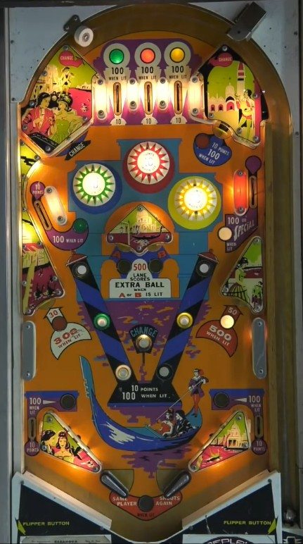

On an unmodified version of Casanova, many game scores are decided by how lucky players get in the backbox bagatelle game that is triggered at the end of every ball. While on the playfield, try to hit rollover buttons and wall switches labelled Change until all three pop bumpers are lit, then take advantage of 100-point lit rollover buttons and 300- or 500-point lit standup targets in the lower half of the table. Hitting either of the center standup targets lights the 500-point lane in the backbox bagatelle for an extra ball.
The below picture of Casanova's playfield was taken from this video from PAPApinball on YouTube.

All features in this game described as being lit score 1/10 as many points when they are not lit.
4 switches in the game are labelled Change: the two sides of the funnel toward the top lanes, the wall switch above-left of the left pop bumper, and the center rollover button. Making any of these switches changes the selected colour. The order of selected colours is green, yellow, green, yellow, red, green, yellow, green, yellow, white.
The selected colour is maintained from ball to ball, player to player, and game to game.
The standup targets in the middle of the table score 10 points and light A and B. When A is lit, the the top rollover button in the left column and the left out lane are lit for 100 points. The same is true on the right when B is lit. Making either A or B qualifies the possible extra ball in the backbox bagatelle game.
Unless you tilt, all balls on Casanova end with one shot into the backbox bagatelle game. The ball lands in one of five slots, which score 100-300-500-300-100 from left to right. If A or B was collected on the previous ball, making the 500 lane on the bagatelle awards an extra ball. On a game with otherwise very short ball times, this luck-based feature can have a massive impace on who earns a high score in a competitive setting. Some copies of Casanova, including the one used in many years of Pinburgh tournaments, have modifications to ensure the bagatelle ball always lands in the 100-point slot to disable extra balls and ensure fairness for all players.
There are no in lanes. 2-inch mini flippers back up directly to the slingshots. Slingshots score 1 point. Out lanes score 10 points, or 100 when lit when A (left) or B (right) has been collected. There is no kickback, free ball gate, or center post.
There is no conventional end of ball bonus, but tilting does cause you to forfeit you backbox bagatelle shot at the end of your ball. Maximum 1 extra ball per ball in play. Special can give a free game or an extra ball, but cannot be set to score points. Tilt ends the ball in play only.
Some rules listed in this guide were confirmed by Lydia Lewis.